第 1 章 初識 AI Infra¶
前言介紹了本書的寫作緣起、章節安排和閱讀方法。本章從模型的執行流程出發，介紹支撐它的系統。AI Infra 是支撐 AI 訓練和推理的基礎設施，包括計算裝置、儲存與互聯，以及組織這些資源的軟體。訓練透過樣本調整模型參數；推理使用訓練得到的參數處理輸入、產生輸出。
本章先說明應用如何透過程式碼、模型與上下文共同表達任務，再追蹤一次請求的處理流程，並用容量、算力和頻寬回答具體的設計問題：資料能否放下，回答要等多久，增加加速器或改變資料表示能帶來多少收益。最後回顧幾個真實架構的形成過程，說明需求如何推動系統設計。
1.1 AI Infra 為什麼重要¶
1.1.1 程式設計抽象上移：從作業系統到模型上下文¶
以文件問答服務為例。開發者先規定文件讀取、檢索和結果展示的程式流程，再把使用者問題與檢索到的材料交給語言模型生成答案。上下文（context）是本次模型呼叫可以使用的輸入內容，包括任務指令、參考材料和此前的互動結果。保持模型參數不變，改變指令、範例或參考材料，就能改變模型處理的任務及回答方式。
若讓該服務檢查程式碼，可以把程式碼、測試要求和可呼叫的工具一同提供給模型，由模型提出修改方案或發起工具呼叫；應用程式執行測試，把結果加入下一次呼叫的上下文，再由模型繼續判斷。工具是供應用呼叫的程式功能，例如讀取檔案或執行測試。模型負責選擇下一步做什麼，宿主程式負責檢查權限、執行操作和儲存結果。完成一次任務可能需要多次模型呼叫和工具執行。
抽象是把複雜實作封裝在明確的介面之後，讓開發者用較少的概念組織程式。可程式設計性是開發者透過某種介面改變系統行為的能力。傳統應用主要用程式碼表達行為，編譯器將程式碼轉換為可執行指令，作業系統管理程式執行所需的資源。模型驅動的應用增加了另一個重要入口：透過選擇模型、組織上下文和提供工具來表達任務。一部分原來需要逐條編寫規則才能實現的行為，現在由模型根據上下文決定；程式碼繼續組織呼叫流程，工具程式繼續透過作業系統存取檔案、網路和裝置。10
圖 1-1 對照了這兩種組織方式。右側的 Agent 負責組織上下文、呼叫模型，並執行模型選擇的工具。其中，模型介面規定應用如何提交輸入、取得輸出。介面背後的執行系統計算模型輸出，並儲存後續步驟需要複用的上下文狀態；加速器是適合並行執行大量模型運算的處理器，記憶體儲存參數與執行狀態，互聯在裝置之間傳遞資料。開發者從上層改變任務，底層要把這些變化落實為具體運算與資料存取。
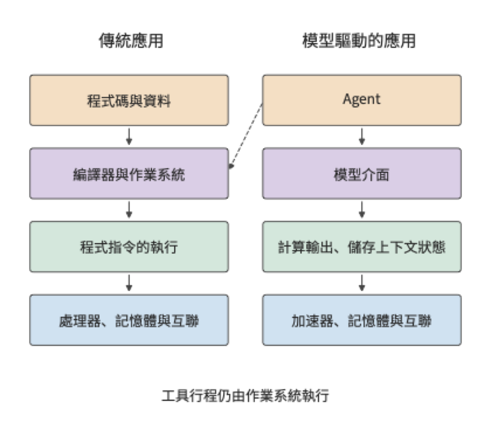
圖 1-1 應用行為的表達方式與執行路徑。左側透過程式碼組織程式，右側透過上下文呼叫模型；實線表示向下的執行依賴，虛線表示工具執行仍需傳統作業系統。加速器、記憶體與互聯分別承擔模型計算、資料儲存和裝置間傳輸的職責。
可程式設計性的變化也改變了模型服務的執行方式。在 AI 系統中，同一個模型為不同應用處理請求時，使用的是同一組參數。系統可以將多條請求合併計算，共用一次讀入的參數，提高加速器利用率。這種方式稱為批處理，每批共同執行的請求數稱為 batch size（批次大小）。與此同時，長文件、長回答和多輪工具呼叫會改變計算量、狀態佔用和等待時間。同一個模型、同一套加速器，處理不同任務時，效能可能相差甚遠。
這種效能差異的背後，是模型與硬體之間的相互影響。從模型設計來看，壓縮儲存的狀態、改變注意力機制或只使用部分模型參數，可以改變硬體需要完成的工作；從硬體條件來看，儲存容量、資料傳輸速度和裝置連線方式，又會影響哪些模型結構和執行方法更合適。理解這種雙向關係，才能同時討論回答品質、回應時間和成本，並解釋為什麼適合一個應用的方案，用於另一個應用時還需重新評估。
在以模型訓練和推理為主要應用的系統中，各層可以圍繞同一個完整的執行過程共同設計。模型結構給出計算和資料依賴，執行時掌握狀態何時產生、何時使用，硬體承擔相應的運算和傳輸。利用這些資訊重新組織執行，可以消除通用實作中的部分開銷。同一模型又能根據不同上下文處理多種任務，既能支援多樣的應用行為，又能讓底層針對模型執行做專門最佳化。上層可程式設計性的變化，為跨層聯合最佳化開啟了新的空間。 本書用量化分析研究這些最佳化機會，解釋原有的設計取捨如何改變，新的實作又如何提高訓練和推理的效能。
1.1.2 從任務到硬體的六層分工¶
一次請求從提出到完成，要依次經過系統的多個層次。使用者提交一段程式碼，請模型找出錯誤。應用把程式碼和問題交給模型服務，服務選定執行請求的加速器，加速器讀入權重與輸入、完成計算，再把生成的回答交回應用。若多個加速器共同執行，還要在加速器之間傳遞中間結果。沿這條路徑，就能逐步找到等待發生在哪裡、哪份資料需要搬移。
華為半導體首席科學家廖恆博士提出「十八層寶塔」，用來描述從應用、模型與軟體系統，到晶片、製造工藝和底層物理的多個層次。他指出，大多數人只瞭解其中的一層或幾層，因而錯失了許多跨層聯合最佳化的機會。1 圖 1-2 借鑑這一方法，將本書內容劃分為六個層次：
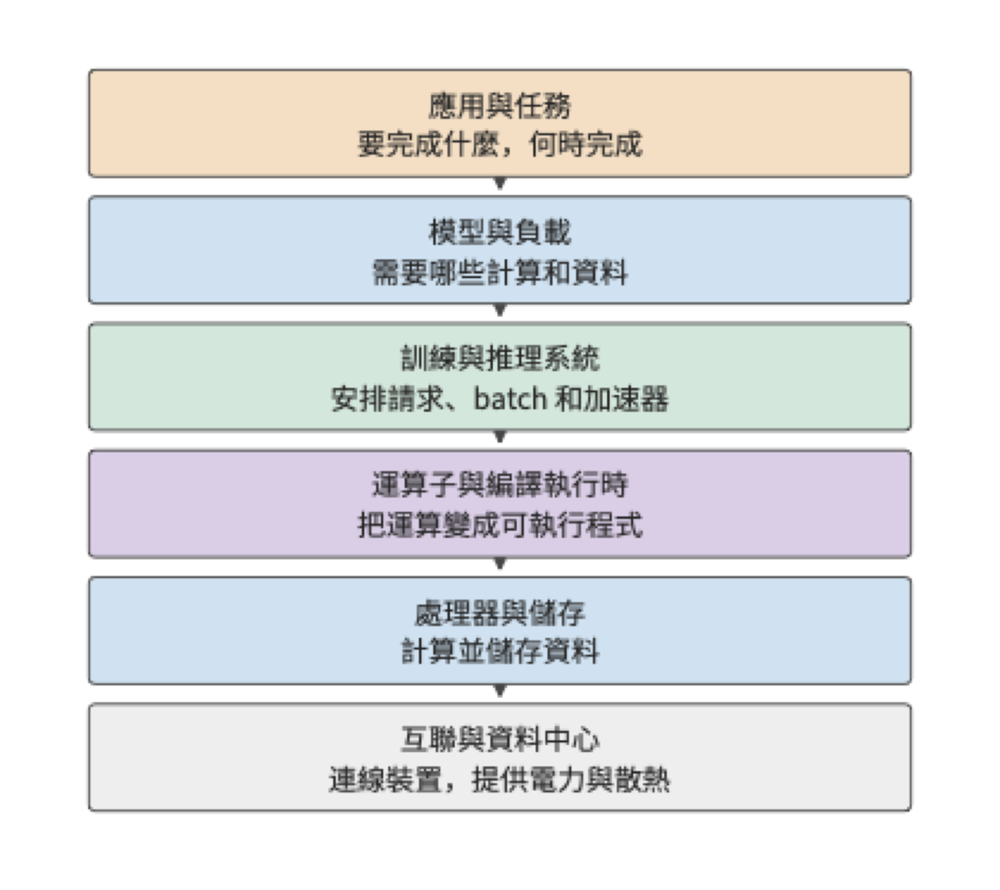
圖 1-2 從應用到硬體的六層分工。
最上面是應用與任務。對話、程式碼生成、語音互動，以及能夠呼叫工具推進任務的智慧體（Agent），都在這一層提出具體要求：要完成什麼任務，結果要多久才能回傳，成本上限是多少。訓練也有自己的任務目標，例如在給定時間內完成一次模型更新或一輪預訓練。
下一層是模型與負載。模型結構規定要做哪些計算、保留哪些資料；實際負載則決定這些工作何時到來、持續多久。一句簡短的提問和一篇長文件，即使交給同一個模型，也會形成不同的計算與儲存需求。模型結構在第 2 章展開，訓練與推理負載在第 3 章展開。
訓練與推理系統負責把這些需求組織成可執行的工作。這一層接收請求或作業，組織 batch，管理執行狀態，並決定如何使用一個或多個加速器。在推理中，它要協調正在生成的請求和新進入的請求；在訓練中，它還要組織參數更新、通訊和恢復。第 8—10 章討論這一層。
再向下是運算子與編譯執行時。模型中的矩陣乘法、歸一化（按統計量調整數值尺度）等操作，需要轉換為處理器能夠執行的程式。本書把矩陣乘法等基本運算稱為運算子；運算子庫提供這些運算的實作，編譯器把程式轉換為加速器可執行的形式，執行時負責提交程式和管理執行中的資源。三者共同決定如何分塊、如何使用臨時儲存、何時提交工作。相同的數學表示式，可以有不同的資料存取和執行方式，第 5 章會具體分析這些差異。這裡還有理解分散式並行的一條線索：矩陣在一張卡內可以分塊執行，模型在多張卡上也可以按樣本、序列、特徵、層或專家（混合專家模型中按輸入逐個選用的子網路）分工。兩者都要先確定每塊由誰計算，再安排輸入到達與結果匯合。區別在於塊之間跨越的是片上儲存、視訊記憶體還是網路。第 6 章將沿這條線索解釋各種並行策略，而非將其視為互不相關的技巧。
處理器與儲存負責執行計算、儲存資料。CPU 是執行通用程式的中央處理器；GPU 是擅長並行處理大量相似運算的圖形處理器，如今也廣泛用於模型計算；NPU 是面向神經網路運算設計的處理器。主記憶體存放 CPU 使用的資料，視訊記憶體存放 GPU 使用的資料，片上儲存則位於處理器晶片內部，讓計算單元能就近讀取資料。計算單元先讀取輸入，再執行運算，最後寫回結果。第 4 章將從計算能力與資料讀取速度的關係出發，解釋加速器的設計。
最下面是互聯與資料中心。裝置之間透過互聯交換資料，伺服器和更大的協作組透過網路連線，供電與散熱決定資源能夠如何部署。第 6、7 章討論超節點與資料中心網路，第 12 章進一步把執行位置擴充到端、邊和雲。
六個層次說明了主要分工，但有些能力貫穿多個層次。資源排程、執行環境、觀測和計費需要結合多個層次的資訊來組織；工藝、封裝、供電和散熱則決定裝置能夠如何製造和部署。網路也並非只在最下方發揮作用：需要跨裝置協作的模型、運算子和服務，都要經過具體互聯。
沿這六層向下看，任務逐步變成具體的計算與資料存取；向上看，加速器的可用儲存容量、算力與頻寬決定系統能執行多大的模型、同時處理多少請求，以及能多快作出回應。這些層次之間的介面，也是聯合最佳化的切入點。模型改變狀態表示，會改變儲存和通訊需求；編譯器將相鄰運算子融合，會改變中間結果的存放位置；執行時讓加速器直接交接，會改變主機參與的次數。
1.1.3 一次生成請求的處理過程¶
推理實例是能夠獨立完成模型請求的一組執行資源，可以由一個或多個加速器組成。每次請求交由其中一個實例處理。圖 1-3 展示了請求分配與實例內部執行的分工：服務路由器是選擇請求執行位置的軟體；路由器選定實例後，由實例內部安排加速器執行模型。先分清誰負責執行，才能知道一份權重應放在哪裡、一份中間結果應傳給誰。
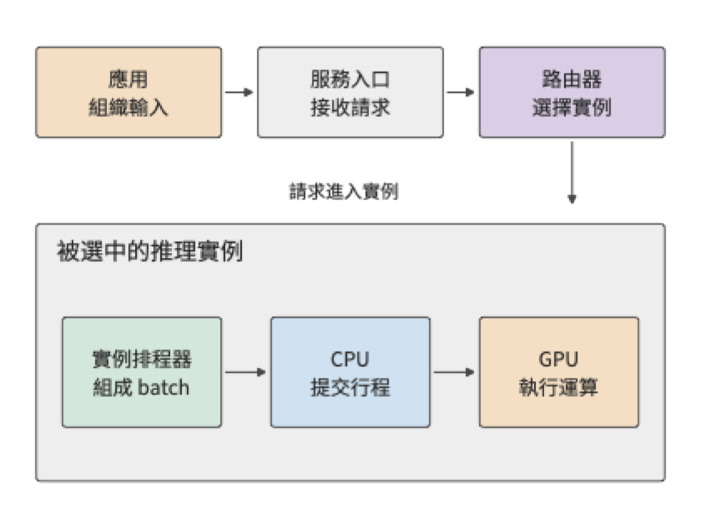
圖 1-3 一次請求先由路由器選擇推理實例，再由實例內部的排程器安排執行。灰色外框圈出同一個實例，實線表示請求和工作提交的方向。
上下文包括使用者輸入、已有對話、檢索結果和此前生成的內容。應用把這些資訊組織成請求，交給模型服務入口。入口核驗存取權限、檢查配額和請求內容後，路由器依據目標模型、實例負載等條件選擇一個實例；實例可以執行在一張卡上，也可以分佈在多張卡上。選定實例之後，實例內部再安排這些卡協作。
文字隨後轉換成 token 序列。詞元（token）是模型處理文字的基本單位，可能對應一個字、詞的一部分或其他片段，具體文字的 token 數由分詞結果確定。文字轉換可以由實例或共享前端完成。實例排程器將請求放入佇列，再編入 batch，並為其狀態分配空間。CPU 上的執行時隨後向 GPU 提交計算任務，GPU 執行相應運算子。11
模型先處理輸入，這一階段稱為預填充（prefill）；隨後逐步生成新 token，這一階段稱為解碼（decode）。後續步驟會複用此前儲存的狀態，其中的 KV 快取（KV cache）儲存上下文 token 產生的鍵和值兩類向量，供後續位置的注意力計算使用。鍵和值是注意力機制使用的資料表示，第 2 章將結合具體運算說明鍵和值如何產生。生成迴圈由實例內部的排程器持續推進，前一步輸出成為下一步輸入。產生的 token 經輸出處理轉換為文字，沿連線以串流方式回傳；如果輸出要求呼叫工具，應用執行工具，把結果加入上下文，再發起後續呼叫。
上述每步計算反覆使用的資料，首先是模型權重。模型權重是訓練得到、用於把輸入變換成輸出的數值參數。權重在實例啟動或模型切換時從儲存載入，隨後持續存放在視訊記憶體中（稱為駐留），供多次請求使用。生成時，GPU 計算單元從視訊記憶體讀取當前層的權重和上下文狀態，完成運算，再將結果交給下一層。同一份資料由此經歷兩種頻率不同的搬移：載入把模型送到加速器，執行則反覆把所需資料送到計算單元。在多卡實例中，一張卡算出的中間結果還要傳給其他卡，後續計算才能繼續。中間張量是運算產生並交給後續運算的多維數值陣列，矩陣就是二維張量。外部請求可能只有一小段文字，內部搬移的資料卻包括大得多的權重、狀態和中間張量。
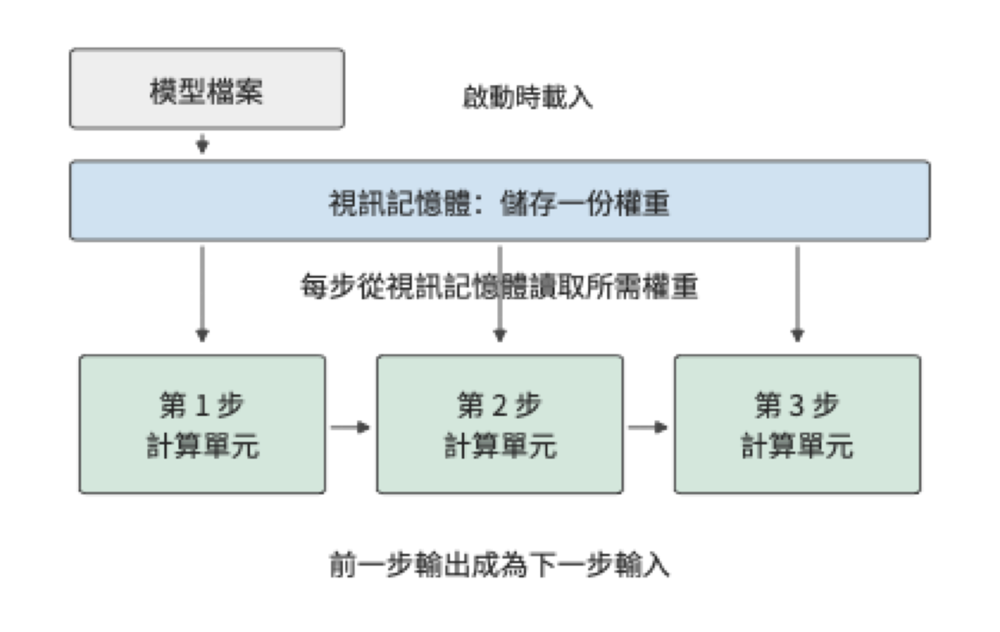
圖 1-4 權重載入一次，生成時逐步讀取。藍框表示視訊記憶體中持續儲存的同一份權重，三個綠框表示先後發生的計算；箭頭表示讀取或結果依賴，步驟間距不代表耗時。
圖 1-5 展示這些軟體功能對應的硬體。資料中心包含入口與 CPU 服務、共享儲存，以及由多個超節點構成的加速器資源池。超節點是一組透過高頻寬互聯緊密協作的加速器，可以分佈在多個伺服器或計算託盤（機櫃內裝有 CPU 與加速器的可插拔單元）中。
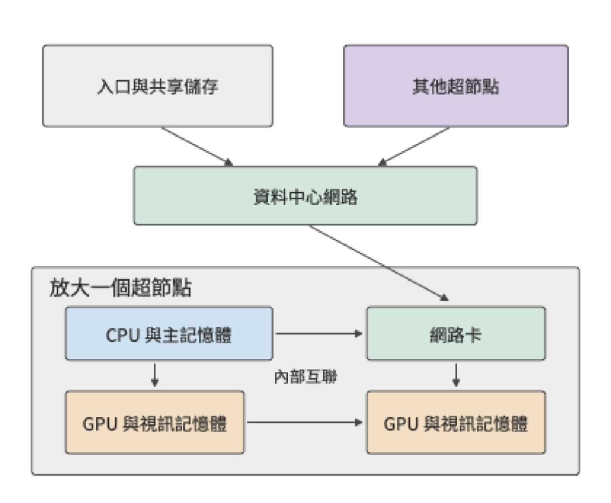
圖 1-5 物理連線的兩層檢視。上方用資料中心網路連線服務與超節點，下方放大一個超節點，顯示主機、網路卡、GPU 與視訊記憶體；線條展示資料路徑，裝置數量用於示意。
在伺服器或計算託盤內，CPU 連線主記憶體，負責主機程式和執行控制；GPU 連線各自的視訊記憶體，執行模型計算、儲存執行所需的資料。HBM（高頻寬記憶體）是加速器常用的一類視訊記憶體，透過寬介面持續提供資料。CPU 與 GPU 可以透過 PCIe（高速外設互聯）連線，GPU 之間也可以透過獨立的高速互聯直接交換資料。網路卡把本機連線到網路。在支援直接記憶體存取的系統中，資料可以由傳輸硬體直接寫入指定記憶體區域，CPU 負責發起和管理傳輸；第 7 章會進一步解釋這種交接。
超節點內部的互聯通常稱為 scale-up（縱向擴充），重點是讓一組加速器以較低的通訊開銷共同計算；多個超節點再透過網路卡與交換網路相連，稱為 scale-out（橫向擴充），用來擴大叢集範圍。兩者都要考慮頻寬、延遲、擁塞與故障，但協作範圍和代價不同。以 NVIDIA 的 GB200 NVL72 為例，官方設計把 36 個 Grace CPU 和 72 個 Blackwell GPU 組織在一個機櫃中，72 個 GPU 透過 NVIDIA 的 GPU 高速互聯 NVLink 直接協作，形成同一個互聯域，叢集網路則負責對外連線。這種組織方式把緊密協作的範圍從單機擴大到了機櫃，模型可以在更多加速器之間分配權重和狀態，頻繁的交接則由機櫃內互聯完成。12
AI 網路與傳統資料中心網路由此形成了分工。服務入口傳遞請求，共享儲存提供模型檔案，加速器互聯傳遞計算中的中間結果。三種流量的傳輸頻率、資料量和依賴關係不同：模型檔案可以提前載入，當前層的部分結果卻必須及時到達，下一層才能繼續。物理連線因此直接影響模型的執行時間。
練習 1-1〔延伸〕：一次請求中的權重讀取、狀態增長與資料傳遞
沿圖 1-3 至圖 1-5，補畫 KV 狀態隨輸出增加的過程，再分別標出模型檔案載入、一步權重讀取、KV 追加和卡間結果傳遞。若回答從 100 個 token 增至 1000 個，哪些資料只載入一次，哪些存取會增加？若把一個實例複製成兩個實例，權重容量與請求路由又怎樣改變？
一次模型執行既受單卡能力影響，也受加速器連線方式影響。單卡的算力和儲存頻寬決定本地計算與讀寫的耗時，多卡協作則增加資料交換和等待。本章先估算單卡執行，後續章節再把同樣的方法用於超節點和網路。
先介紹一組貫穿全書的真實模型。DeepSeek V4 和 V4.1 Flash 提供了一條可以持續追蹤的線索。V4 已經透過上下文壓縮與稀疏存取改變儲存和讀取需求，V4.1 Flash 則進一步重新劃分模型內部的職責。傳統的 decoder-only（僅解碼器）模型通常讓輸入 token 經過完整主幹，逐層建立生成所需的狀態；V4.1 Flash 採用因果編碼器—解碼器（Causal Encoder-Decoder，CED）架構，由編碼器形成上下文表示，解碼器從這些表示取得全域資訊。大量輸入 token 因此無需經過解碼器主體的計算；生成新 token 時，模型仍依次經過編碼器與解碼器。輸入與輸出的執行路徑並不對稱，模型因此能針對 Agent 輸入多、輸出相對少的負載重新安排計算投入。18
這是一項架構層面的選擇，也會改變系統需要儲存和傳輸什麼。本書將圍繞同一類會話展開討論：Agent 等待工具回傳結果，恢復此前上下文，處理新增輸入，再繼續生成。第 2 章解釋 CED 的結構與狀態，第 3 章分解輸入和生成負載，第 4—7 章追蹤加速器執行和資料路徑，第 8、9 章討論如何快取狀態、分配請求，最後比較完整任務的執行效果。開源模型 Qwen3 提供基礎算例，用於建立計算方法；V4／V4.1 用於檢驗模型與系統如何共同改變。
1.1.4 從儲存程式到資料流執行¶
理解 AI 加速器，可以先把處理器和儲存器想像成一棟大樓。所有廁所都集中在一樓時，樓上的人每次使用都要下樓，距離和擁擠會限制整棟大樓的效率；如果每層都設置廁所，存取距離縮短，卻要佔用更多面積，還要安排管線、維護和容量。暫存器、快取、晶片上的緩衝區、裝置記憶體和主機記憶體，正是距離、容量和成本各不相同的資料存取位置。
電腦架構的演進，始終圍繞著如何縮短這段距離。儲存程式電腦用可定址的記憶體保存指令和資料；處理器速度提高後，暫存器、多層快取、預取、向量指令和並行執行相繼出現，用更近的儲存和更多在途請求減少等待。GPU 和 AI 加速器進一步把資料複用變成明確的執行結構：執行緒協作使用共享記憶體，矩陣單元沿固定路徑複用運算元，搬移引擎與計算單元並行工作，編譯器安排分塊、佈局和緩衝。
Transformer 的 prefill、decode、KV 存取和專家路由具有不同的複用範圍，不能只依賴一套自動快取策略。因此，加速器需要共同設計計算單元、區域性儲存和資料路徑；後續章節會說明如何把模型執行變成可以計算、搬移和排程的系統工作。
1.2 系統設計的關鍵數字¶
1.2.1 用數量級判斷方案¶
估算單卡執行之前，先要知道各類基本操作大致耗時多少。Jeff Dean 在 2009 年的一次演講中列出了一張後來被廣泛引用的表，標題是「Numbers Everyone Should Know」。表中既有快取、記憶體的存取時間，也有磁碟和網路操作的時間。這張表體現了一種實用的工作方式：在寫程式或搭建系統之前，先估算主要操作需要多少時間和資源。2
下面完整列出原幻燈片的 12 項操作和數值。所有時間統一為 ns（納秒，十億分之一秒）；1 μs（微秒）等於 1000 ns，1 ms（毫秒）等於 1000 μs。資料單位中，1 byte（位元組）等於 8 bit（位元）；bit/s 表示每秒傳送的位元數，Gbit/s 中的 G 表示十億。容量單位 KB、MB、GB、TB 分別表示 \(10^3\)、\(10^6\)、\(10^9\)、\(10^{12}\) 位元組；KiB、MiB、GiB 分別表示 \(2^{10}\)、\(2^{20}\)、\(2^{30}\) 位元組。這組數字對應 2009 年的裝置環境，用於理解不同操作之間的數量級關係。
快取儲存近期可能再次使用的資料；一級快取通常比二級快取更小、更靠近計算核心。分支預測是處理器對接下來執行哪條指令路徑的預判，預測錯誤時要重新安排執行。執行緒是程式中獨立排程和執行指令的單位；互斥鎖限制多個執行緒同時存取同一份共享資料。磁碟尋道是機械磁碟移動磁頭、定位目標磁軌的過程。Zippy 是 Google 當時使用的壓縮庫。這些操作分別涉及計算、同步、儲存與網路，耗時可能相差多個數量級。
| 操作 | 時間（ns） |
|---|---|
| 存取一級快取 | 0.5 |
| 分支預測錯誤後的恢復 | 5 |
| 存取二級快取 | 7 |
| 對互斥鎖加鎖或解鎖 | 25 |
| 存取主記憶體 | 100 |
| 用 Zippy 壓縮 1K 位元組 | 3,000 |
| 經 1 Gbit/s 網路傳送 2K 位元組 | 20,000 |
| 從主記憶體連續讀取 1 MB | 250,000 |
| 同一資料中心內往返 | 500,000 |
| 磁碟尋道 | 10,000,000 |
| 從磁碟連續讀取 1 MB | 20,000,000 |
| 封包從加州到荷蘭再回傳 | 150,000,000 |
取其中三個歷史數字：主記憶體存取約 100 ns，同一資料中心內的一次往返約 500,000 ns，磁碟尋道約 10,000,000 ns。換算單位後即 0.1 μs、0.5 ms 和 10 ms，如圖 1-6 所示。
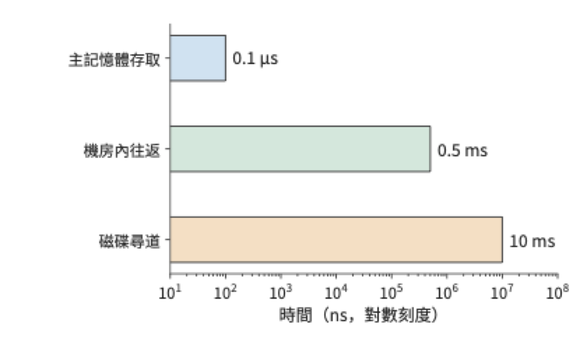
圖 1-6 Jeff Dean 2009 年演講中的三種操作延遲。橫軸為對數刻度，每相鄰數量級相差十倍；先識別操作，再比較它們依序等待時的代價。
按這組數字，一次磁碟尋道所需的時間約為一次主記憶體存取的十萬倍。若請求需要依次等待多次存取，這些延遲就會累加，延長請求的完成時間。若請求必須先找到一塊資料，才能確定下一次存取的位置，處理器在兩次存取之間即使只做很少的計算，也要等待整個儲存存取過程。
例如，設請求依序執行 20 次尋道，每次 10 ms，全部 CPU 計算為 1 ms，總時間就是 201 ms。把計算速度提高一倍，只能節省 0.5 ms；把相關資料連續放置，將尋道次數從 20 次減為 10 次，則節省 100 ms。兩種最佳化分別作用於計算與等待，收益的差距來自它們在原執行時間中的佔比。
把時間分解後，就能算出最佳化方向：某一部分在原總時間中佔比越大，縮短這一部分對整體的改善越大。在前面的尋道例子中，計算只佔總時間的 \(1/201\)；即使這一部分完全消失，總時間也只減少約 \(0.5\%\)。
將上述關係推廣，便得到總加速比的計算公式。若原執行時間中有比例 \(f\) 的部分能夠加速 \(s\) 倍，其餘工作與執行次序保持不變，則總加速比為：
這就是 Amdahl（阿姆達爾）定律。即使把這部分加速到耗時可以忽略，總加速比也不超過 \(1/(1-f)\)。當尋道次數減少時，被縮短的是佔比最大的等待部分，因此這項最佳化對總時間的作用遠大於 CPU 加速。
例：同樣使用 AI 程式設計工具，為什麼不同團隊的整體加速比不同？ 假設完成一項開發任務，需要依次經歷溝通、編碼、評審和審批等環節，AI 程式設計工具讓編碼速度提高到原來的 5 倍，其他環節的耗時保持不變。在協調層級較多的大公司團隊裡，編碼可能只佔原總耗時的 20%—30%，其餘時間花在開會、跨團隊溝通和審批上。代入公式，整體加速比只有約 1.19—1.32 倍。例如，原來需要 100 小時，其中 20 小時用於編碼；編碼縮短到 4 小時，其他環節仍需 80 小時，總耗時就是 84 小時。
在溝通成本較低的創業團隊裡，假設編碼佔原總耗時的 70%—80%，同樣的編碼加速就能讓整體加速比達到約 2.27—2.78 倍。以編碼佔 80% 為例，原來的 100 小時變成 \(20+80/5=36\) 小時。
Amdahl 定律適用於任何只加速部分環節的完整流程。 CPU、模型推理和軟體開發都可以用同一個問題來分析：被加速的部分原來佔多少時間，剩餘時間花在哪裡？想進一步縮短交付時間，就要繼續改善溝通、評審和審批等環節。區域性速度的提升，最終要放回完整任務中衡量。
這張表體現的方法可以直接用於模型執行：先確定各項工作使用什麼資源，再比較所需時間。
1.2.2 分析 AI 系統需要哪些關鍵數字¶
設某任務同時需要儲存 \(M\) 位元組，執行 \(F\) 次浮點運算，並透過某個儲存介面讀寫 \(R\) 位元組。加速器提供容量 \(M_{\mathrm{cap}}\)、計算吞吐 \(\Pi\) 和介面頻寬 \(\beta\)。這三類需求必須分別與加速器提供的資源比較：
容量決定能否同時儲存所需資料；後兩項把工作量換算為時間。一份資料可以儲存一次、讀取多次，所以 \(M\) 與 \(R\) 要分別計算。若 \(\Pi\) 和 \(\beta\) 取峰值，得到的就是完成指定計算與讀寫所需的時間下界。
峰值由晶片的計算單元數量、工作頻率和儲存介面決定，所以這個下界就是硬體的物理極限，軟體無論怎樣組織都不可能更快。下界與實際耗時 \(T\) 之比，反映硬體能力被用掉了多少。計算方面的比值 \(F/(\Pi T)\) 稱為 MFU（model FLOPs utilization，模型 FLOPs 利用率），頻寬方面的比值 \(R/(\beta T)\) 稱為 MBU（memory bandwidth utilization，頻寬利用率），兩者都不超過 1。全書反覆使用這兩個比值，回答的是同一個問題：設計離硬體的物理極限還有多遠。
除了容量、計算吞吐和頻寬，還需要認識操作延遲。下面分別說明這四類數字如何進入估算。
容量回答能同時放下多少資料。例如，一張加速卡有多少視訊記憶體，決定了能否容納模型權重、上下文狀態和執行時的臨時工作區。容量以 byte（位元組）計量。
計算吞吐回答單位時間內能完成多少運算。常見的 FLOP 表示一次浮點運算，FLOPs 表示運算總次數，FLOP/s 表示每秒的浮點運算數。GFLOPs、TFLOPs 分別表示十億、萬億次浮點運算，GFLOP/s、TFLOP/s 則表示相應的每秒速率。矩陣計算中一次乘法加一次加法通常計為兩次運算。矩陣峰值對應特定的輸入精度、累加精度和稀疏條件。稠密計算按完整矩陣執行；稀疏計算利用零元素或規定的稀疏結構跳過部分運算。
頻寬回答單位時間內能傳送多少資料。視訊記憶體頻寬描述視訊記憶體與晶片之間的資料搬移能力，卡間鏈路和網路頻寬描述其他路徑的能力。估算哪一段傳輸，就使用該段介面的頻寬。
延遲回答發起一次操作以後需要等多久。高頻寬介面也可能有不可忽略的啟動或往返時間。傳輸大資料塊時，耗時主要取決於資料量與頻寬的比值；請求較小且必須逐次等待時，啟動和往返時間就可能佔據主要部分。
以一款真實加速器為例。H100 是 NVIDIA 的一代 GPU，SXM 指本例採用的模組形態。BF16 是每個數佔 16 位（2 位元組）的浮點格式，FP32 是每個數佔 32 位（4 位元組）的浮點格式；矩陣乘法可以讀取 BF16 輸入，用 FP32 儲存累加結果。H100 SXM 的視訊記憶體容量為 80 GB，HBM 頻寬為 3.35 TB/s，BF16 輸入、FP32 累加的稠密矩陣峰值約為 989.4 TFLOP/s。3
將 H100 與 NVIDIA 的 A100 80GB SXM、GeForce RTX 4090 放在一起，就得到一張 GPU 資源速查表。三者分別採用 Hopper、Ampere 和 Ada 架構。表中的容量使用廠商名義 GB，頻寬使用十進位制 TB/s；矩陣算力統一採用 BF16 輸入、FP32 累加、稠密計算的峰值。最後一行由 1 GB 除以視訊記憶體頻寬得到。16
| 資源或操作 | RTX 4090 | A100 80GB SXM | H100 SXM |
|---|---|---|---|
| 視訊記憶體容量（GB） | 24 | 80 | 80 |
| 視訊記憶體頻寬（TB/s） | 1.008 | 2.039 | 3.35 |
| BF16 矩陣峰值（TFLOP/s） | 165.2 | 312 | 989.4 |
| 按頻寬峰值讀取 1 GB（ms） | 0.99 | 0.49 | 0.30 |
這張表提供了把工作量換算成時間所需的硬體效能資料。例如，讀寫量保持不變而頻寬增加一倍，\(R/\beta\) 減半；計算量保持不變而算力增加一倍，\(F/\Pi\) 減半。
1.2.3 參數儲存量與鏈路頻寬的換算¶
這四類指標要與具體工作對應起來，才能用於估算。第一步是把模型參數換成儲存位元組數，判斷加速器能否放下；第二步再用位元組數除以頻寬，估算搬移這些資料需要多久。
以真實模型 DeepSeek-R1-Distill-Llama-70B 為例。該模型基於 Llama 架構，是稠密模型（每個 token 都使用全部參數計算），公開權重包含約 705.54 億個參數。名稱中的 B 表示十億，70B 是參數規模的約數；後文公式中的變數 \(B\) 表示 batch 中的請求數。用 \(N\) 表示參數數量，\(b_W\) 表示每個權重的儲存位元組數。BF16 每個權重佔 2 位元組，公開權重檔案中的總位元組數為13
本節統一使用十進位制 GB，即 \(1\ \mathrm{GB}=10^9\) bytes；二進位制單位 GiB 則為 \(2^{30}\) bytes。因此，141.11 GB 約為 131.42 GiB。加速器的可用儲存容量與權重大小換成相同單位後，才能相減。
141.11 GB 權重超過一張 H100 SXM 的名義 80 GB 視訊記憶體。將權重均分到兩張卡上，每張約佔 70.55 GB，各剩約 9.45 GB。切分即讓不同加速器分別儲存並計算模型的一部分。兩張卡之間需要交換中間結果，第 6 章將討論具體的切分與通訊方法。
還可以改變權重的儲存精度。量化（quantization）用較少的位數表示數值，例如用 8 位整數近似表示原來的 16 位浮點權重，並用 scale（縮放因子）將整數還原為相應範圍內的近似值。每個量化後的權重從 2 位元組減為 1 位元組，記憶體佔用因而明顯下降。
本書採用的分組量化方案每 128 個權重共享一個 scale，同時讓部分參數繼續使用 BF16。按真實模型設定計算，8 位元方案的全部權重及量化附加資料約佔 73.73 GB，可以放入一張 H100 SXM，留下約 6.27 GB。圖 1-7 將兩種辦法放在相同的容量刻度上：BF16 權重分到兩張卡，或者量化後放入一張卡。
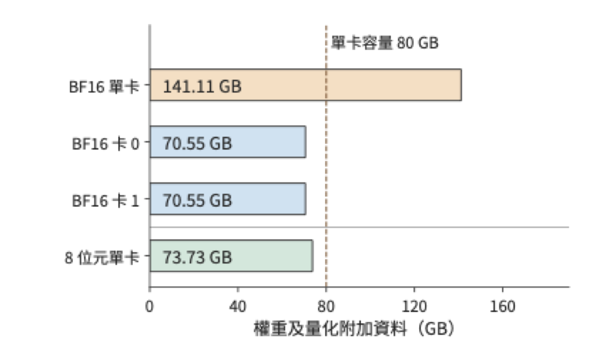
圖 1-7 DeepSeek-R1-Distill-Llama-70B：BF16 權重共 141.11 GB，兩卡均分後每卡約 70.55 GB；分組 8 位元量化後共 73.73 GB。各條使用相同尺度，虛線表示一張 H100 SXM 的名義 80 GB 容量。柱長只計權重及相應量化附加資料。
KV 快取如何增加單請求的視訊記憶體需求。 生成文字時，視訊記憶體還要儲存 KV 快取，供後續計算直接複用；運算子執行還需要臨時工作區。因此，容量檢查應寫成
其中 \(M_W\) 是權重與量化附加資料，\(M_{\mathrm{state}}\) 是請求的上下文狀態，\(M_{\mathrm{work}}\) 是工作區，\(M_{\mathrm{cap}}\) 是加速器的可用儲存容量。以該模型的一條 8192 個 token 的請求為例，BF16 KV 快取為 2.5 GiB，約 2.68 GB；再預留 2 GiB、約 2.15 GB 給工作區，8 位元方案總共約佔 \(73.73+2.68+2.15=78.56\) GB，符合這一容量預算。第 2 章將從模型層數與注意力結構推導 KV 大小，並計算更長上下文和更多併發請求的記憶體需求。
換成名義視訊記憶體為 24 GB 的 RTX 4090，同一份 73.73 GB 權重就超過了三張卡合計的 72 GB。按相同的名義容量預算，僅儲存權重也至少需要四張；還要逐卡檢查 KV 和工作區。模型與精度相同，單卡容量不同，所需加速器數量就會改變。
網路傳輸也要做同樣的單位換算。網路頻寬常以 bit/s 計量，8 bit 為 1 byte，所以一張 400 Gbit/s 的 ConnectX-7 網路卡，線速（鏈路的標稱傳輸速率）等於 50 GB/s。按此線速傳輸 1 GB 資料需要 20 ms。每次傳輸還需要啟動時間，協議開銷和共用鏈路的其他流量也會影響應用實際獲得的頻寬。沿傳輸路徑計入這些因素，便能更細緻地估算通訊時間。
練習 1-2〔核心〕：不同權重精度下的視訊記憶體需求與多卡分配
DeepSeek-R1-Distill-Llama-70B 的 BF16 權重佔 141.11 GB，8 位元量化權重佔 73.73 GB。部署在 H100 SXM 上，每張卡有 80 GB 視訊記憶體。為每張卡預留 5 GB 狀態與工作區，分別判斷單卡部署和將權重均分到兩張卡的方案能否容納模型。再考慮兩張視訊記憶體容量不同的卡：一張 48 GB 的 RTX A6000 和一張 80 GB 的 H100 SXM，分別判斷兩種精度下能否完成部署，並為可行的方案給出一種權重分配方式。最後將 400 Gbit/s 換成 GB/s，求傳輸 1 GB 的理想時間。
1.3 用幾個數字估算一次模型執行¶
1.3.1 生成一個 token，先檢查什麼¶
例題 1-1：70B 模型的單步生成如何接近 10 ms 目標？ 給定一張 H100 SXM，能否讓上一節的 DeepSeek-R1-Distill-Llama-70B 在 10 ms 內生成一個新 token？先考慮每參數一位元組儲存，再比較算力翻倍、頻寬翻倍和批內權重複用。
解：先檢查視訊記憶體容量，再計算運算量和讀取量。
為便於手算，將該模型的參數量近似取為 \(N=70\times10^9\)，先按每個參數一位元組估算主要權重的資料量，讀入後轉換為 BF16 參加矩陣運算。單個請求每步處理一個新 token，每步從視訊記憶體讀取一遍這些權重。
估算條件：權重讀取與矩陣計算充分重疊。 容量採用上一節計入量化附加資料的 73.73 GB 結果；本節先將主要權重的讀取量近似為 70 GB。時間模型只計主要權重矩陣的乘加和一次完整權重讀取，採用資源表中的 BF16 矩陣峰值與 HBM 頻寬；讀取和計算按充分重疊估算。
單請求的容量預算上一節已經檢查。生成速度方面，權重載入到視訊記憶體之後，每一步仍需將參與計算的權重送到計算單元；按上述近似，每步讀取約 70 GB。
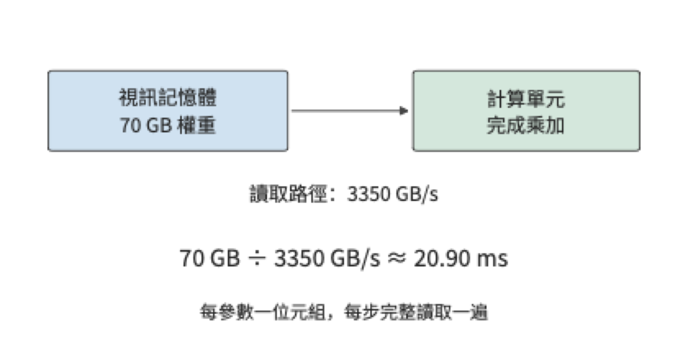
圖 1-8 本例按每參數一位元組，將主要權重讀取量近似取為 70 GB。權重駐留視訊記憶體，計算單元每步沿同一介面讀取一遍；用讀取量除以介面頻寬，得到 20.90 ms 的讀取下界。
這 20.90 ms 的讀取開銷會在每個生成步驟重複出現。對單個請求，下一步的輸入由當前輸出確定，後續步驟要沿這條依賴逐次推進。
計算量也可以先做近似。一次矩陣與向量的乘法中，每個權重通常參與一次乘法，所得乘積再累加到結果中；按乘法與加法分別計數，大約對應兩次浮點運算。因此，本例的主要矩陣運算量近似為：
\(2N\) 的來源是：在投影（用權重矩陣對特徵向量做的線性變換）中，每個權重與一個 token 特徵向量中的對應分量相乘，再將乘積累加到輸出中。參數矩陣中的權重越多，這部分工作量就越大；一批中參與計算的 token 數增加時，同一權重矩陣處理更多 token 的特徵向量，運算量隨之增加。第 2 章將展開真實模型，在這部分線性工作之外加入隨上下文長度變化的注意力互動。
把 batch size 記為 \(B\)，並讓這 \(B\) 個請求共同使用一次讀入的權重，就得到這一教學模型的三個量：
前兩個式子在這一步恰好相等，是因為權重儲存一份、讀取一遍。執行下一步生成時，駐留量仍是 \(M_W\)，卻會再增加一次 \(R_W\) 的讀取。\(B\) 增大則增加本次運算量：同一份權重要與更多請求的當前輸入 token 向量做乘加運算。第 2 章將進一步加入各請求獨立的上下文狀態。
1.3.2 計算與讀取分別需要多久¶
把 \(F=140\ \mathrm{GFLOPs}\) 與 \(R_W=70\ \mathrm{GB}\) 分別除以相應的資源能力，得到單請求的兩項時間下界。
權重讀取的時間下界約為矩陣計算的 148 倍。按標稱算力，矩陣運算耗時極短；視訊記憶體把權重送到計算單元卻需要長得多的時間。完成當前步驟之前，這些資料必須全部讀入。4
原因在於，本例每讀取一個權重只做一次乘加。計算單元迅速處理完已讀入的資料後，又要等待後續資料。提高算力只能縮短乘加耗時，無法加快視訊記憶體讀取。
這兩項時間應當相加，還是取其中較大者，取決於讀取與計算能否重疊。若資料分塊到達，計算當前塊時可以繼續讀取下一塊；在充分重疊的簡化模型中，耗時下界為：
進入穩定階段後，每塊資料都要經過讀取和計算，較慢的一項決定處理速度。本例中，讀取權重遠慢於矩陣計算，因此最佳化應首先針對這 20.90 ms 的讀取時間。
討論：算力、頻寬與批內複用分別能縮短多少生成時間？ 僅權重讀取就至少需要 20.90 ms，已經超過 10 ms 的目標。雖然視訊記憶體能容納這些資料，讀取速度仍然達不到要求。先分別比較增加算力與增加頻寬的效果。
把計算能力翻倍，矩陣計算時間從約 0.1415 ms 變為 0.0707 ms，純權重讀取仍需要約 20.90 ms，決定執行時間的讀取下界保持不變。把 HBM 頻寬翻倍，讀取時間才會降為約 10.45 ms，當前下界隨之下降。兩種改動都提升了一項硬體能力，但對任務耗時的影響不同。
另一種辦法是減少需要讀取的資料。運算量不變時，把權重減半，讀取下界也降到約 10.45 ms。頻寬翻倍讓讀取速度加倍，權重減半則讓待讀取的資料減少一半，兩種辦法在這條算式中取得相同結果。第 2 章和第 5 章將討論低位寬表示的格式和轉換過程。
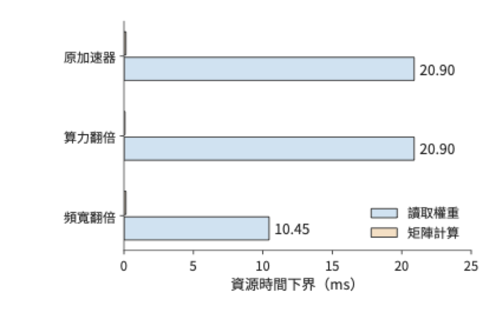
圖 1-9 保持運算量與讀取量不變，分別把算力或頻寬翻倍。藍條是權重讀取下界，橙條是矩陣計算下界；較長的讀取項決定這組條件下的最佳化方向。各柱分別表示計算或資料讀取的時間下界，完整執行仍須滿足依賴關係。
接著改變請求組織。假設 8 個請求同時處理並共享一次權重讀取，整批的權重讀取仍是 70 GB，矩陣運算量則約為單請求的 8 倍。這時矩陣計算的時間下界約為 1.13 ms，讀取下界仍為 20.90 ms。若這一批產生 8 個輸出，每個輸出分攤的權重讀取時間約為 2.61 ms。
整批執行產生八個輸出，吞吐因而從單請求模型的約 47.9 token/s 提高到約 383 token/s，而每個請求仍須等待整批執行完成。批內複用增加同一時間內生成的輸出數，單請求延遲則取決於它經歷的執行與等待。
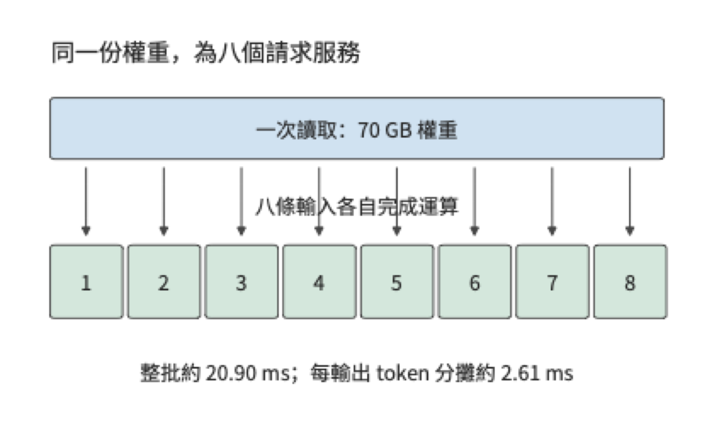
圖 1-10 一批八個請求共享一次權重讀取，各產生一個輸出。整批讀取仍需約 20.90 ms，除以八得到每輸出分攤的服務時間；每個請求經歷整批執行。「每輸出 token 分攤」是整批耗時除以輸出 token 數，用於換算吞吐，不是單個請求的回應延遲。
batch 增大到一定程度後，計算時間將追平權重讀取時間。令 \(2BN/\Pi=b_WN/\beta\)，得到轉折點
本例取 \(b_W=1\)、\(\Pi=989.4\times10^{12}\ \mathrm{FLOP/s}\)、\(\beta=3.35\times10^{12}\ \mathrm{bytes/s}\)，得到 \(B_*\approx147.7\)。在這一隻計主要矩陣運算與權重讀取的模型中，batch 較小時，增加請求可以分攤權重讀取開銷；超過約 148 後，計算耗時超過權重讀取耗時，繼續增加 batch 會近似按比例增加整批時間。該轉折點只比較矩陣運算與權重讀取，沒有計入各請求的上下文狀態：按 1.2.3 節的容量預算，一張 H100 SXM 容納 73.73 GB 權重後只剩約 6.27 GB，無法容納 148 條請求的 KV。
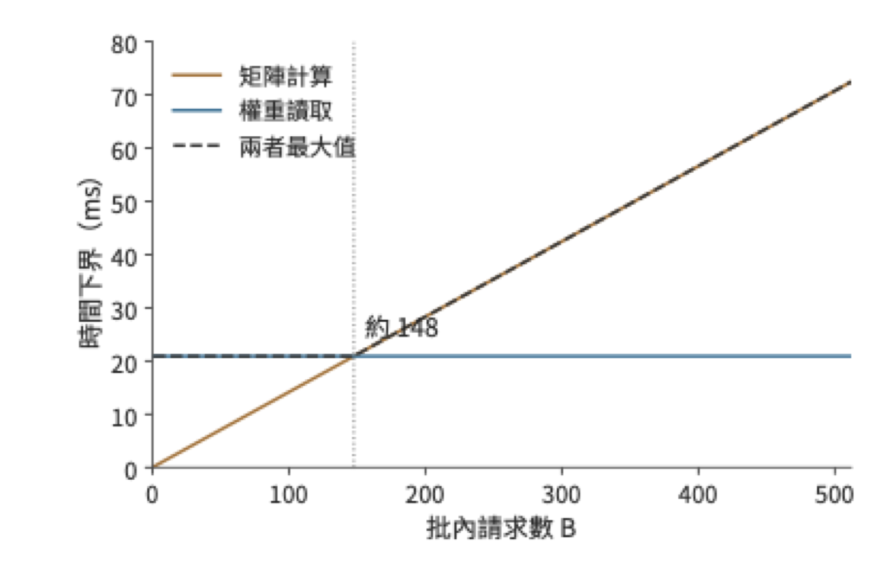
圖 1-11 批內請求增加時，矩陣運算量按 \(2BN\) 增長，權重讀取保持每批 70 GB。約 148 個請求處兩項下界相等，隨後計算耗時決定整體速度。
把每批輸出數 \(B\) 除以上圖中的時間下界，便得到這組題設對應的吞吐上界。轉折前，共享的讀取由更多輸出分攤；轉折後，計算時間與輸出數一起增長，曲線逐漸趨於平坦。
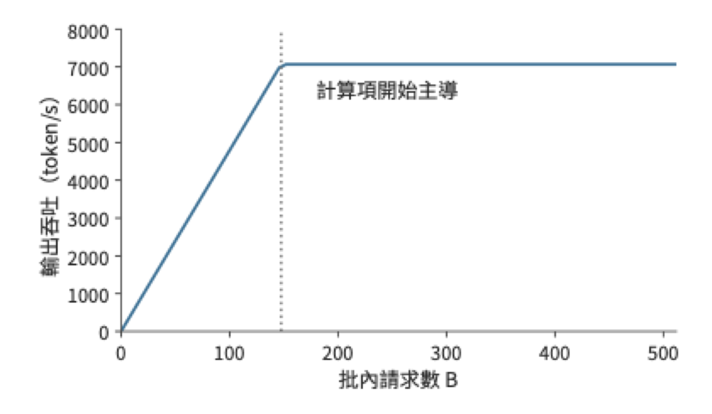
圖 1-12 上述批處理模型的理想輸出吞吐率。每批輸出數除以時間下界得到曲線；豎虛線與前圖對應同一個約 148 請求的轉折點。
同一轉折也可以用算術強度 \(I=F/R_W=2B/b_W\) 描述，即每讀取一位元組資料所完成的運算次數。當 \(I\) 小於加速器的算力與頻寬之比 \(\Pi/\beta\) 時，讀取所需時間更長；超過該比值後，計算所需時間更長。這就是第 4 章 Roofline（屋頂線）模型的出發點。5
練習 1-3〔核心〕：頻寬與 batch size 如何影響單步生成時限
採用例題 1-1 的模型與加速器，將有效頻寬設為標稱值的 70%，有效計算吞吐率設為峰值的 50%。分別取 \(B=1,16,64\)，計算整批執行時間的下界、平均每個輸出 token 分攤的執行時間，以及理想吞吐率。目標是每請求每步不超過 10 ms：哪些 batch size 僅根據時間下界就可以判定無法滿足目標？再把權重讀取量減半、運算量保持不變，重新判斷。求計算時間與讀取時間相等時的 batch size \(B_*\)，並解釋為什麼每個輸出分攤的執行時間減少，並不意味著每個請求的單步延遲縮短。
1.3.3 用實測檢驗估算¶
前面的模型預測了兩個趨勢：batch 較小時，吞吐隨 batch 增加；整批時間則受到一次權重讀取的限制。真實程式中，每條新增請求還會增加上下文存取與計算。圖 1-13、1-14 給出 Qwen3-8B 在 RTX PRO 6000 Blackwell Workstation Edition 上使用 BF16 權重的測量結果。這張卡有 96 GB 視訊記憶體、1.792 TB/s 視訊記憶體頻寬，BF16 輸入、FP32 累加的稠密矩陣峰值為 503.8 TFLOP/s。vLLM 是加州大學伯克利分校等機構的研究者在 2023 年提出的開源推理服務系統，負責組織模型請求並執行推理，最初重點解決的是 KV 快取浪費視訊記憶體、限制 batch size 的問題。本次採用 0.23 版本的 eager 模式，即按程式執行順序逐項向加速器提交工作。每請求輸入 2048 個 token、生成 256 個 token，每檔 batch 測量三次。7 吞吐表示單位時間內產生的輸出數；每輸出 token 時間（time per output token，TPOT）在這裡表示客戶端觀察到的平均輸出間隔。
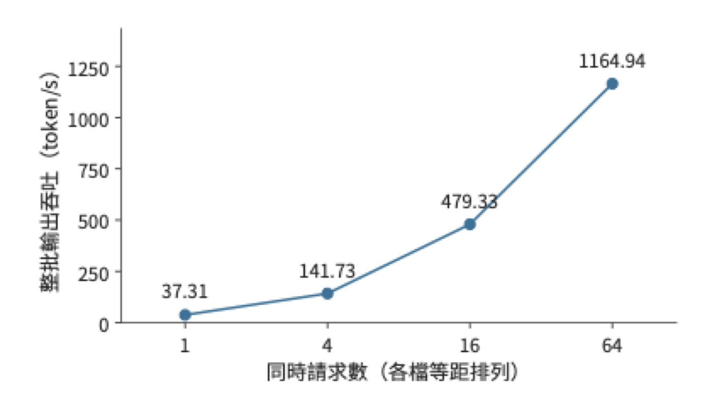
圖 1-13 Qwen3-8B 實測的整批輸出吞吐。四檔請求數等距排列，縱軸從零開始；模型、精度、輸入輸出長度和計時範圍保持一致。
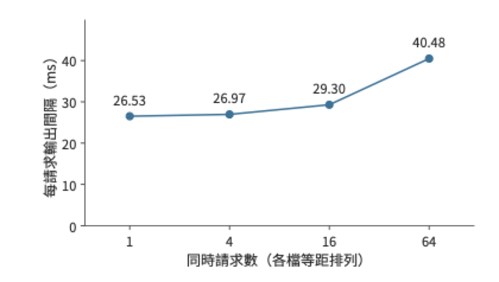
圖 1-14 同一組實測中的每請求輸出間隔。吞吐增加的同時，單個請求的平均間隔也在增大；兩張圖分別說明加速器的輸出速度和使用者的等待時間。
從 1 個請求增到 64 個請求，整批吞吐約提高 31 倍，單請求輸出間隔則從約 26.5 ms 增至 40.5 ms。兩幅圖合起來描述批處理的取捨：加速器在同樣長的時間內完成更多請求的工作，每個請求完成一步生成所需的時間卻更長。
圖 1-13 的吞吐按整批輸出數除以處理這批請求的總時間計算，其中包括輸入處理時間，三次測量取中位數。TPOT 則先對每個請求計算首末輸出事件之間的時間，再除以其間的 255 個輸出間隔，然後取同批請求的中位數，最後取三次測量的中位數。前者描述整個實例的輸出速度，後者描述單個使用者經歷的生成節奏。第 3 章將進一步分析請求到達、排隊和少量慢請求對這些指標的影響。
這一趨勢可以用權重與上下文狀態的區別來解釋。多個請求共同使用模型權重，但各自儲存上下文狀態。併發增加時，一次矩陣運算會同時處理更多請求的當前輸入 token 向量，權重得到更多複用；與此同時，注意力計算和上下文存取也隨請求數增加。
在基本模型中補上這部分隨請求數增加的工作，可先把一步耗時寫成
其中 \(F_1\) 是每請求的運算量，\(R_{\mathrm{state},1}\) 是每請求的狀態讀寫量。batch 增加時，權重讀取開銷由更多輸出分攤，但各請求的狀態讀寫總量也隨之增加。下一章將根據實際模型計算這些工作量，並預測上下文變長後，計算時間與讀取時間相等的轉折點會移到哪裡。
練習 1-4〔核心〕：用實測吞吐與輸出間隔檢驗批處理模型
根據圖 1-13、1-14 標出的四檔併發請求測量值，計算各檔併發相對於單請求的吞吐率之比，以及 TPOT 的增長比例。假設增加併發後仍只受共享權重讀取限制，計算與上下文存取都不增加耗時，吞吐率應怎樣變化？對照實際結果，提出兩個可以透過測量區分的解釋，並設計一次只改變上下文長度的測量來判斷它們。指出測量前需要保持不變的模型、輸出長度與計時起止點。
回看這次估算，全程都在回答五個問題：搬什麼、搬多少、搬幾次、經過哪裡、誰在等待。 模型結構決定需要哪些權重，位寬和參數量決定儲存大小，批內複用改變了讀取次數，視訊記憶體介面提供了頻寬，執行依賴決定了等待。這五個問題把模型結構、資料路徑和執行順序連成一份可以逐項計算的預算。
1.3.4 實測為何達不到極限：模型漏項還是系統開銷¶
做系統最佳化，常見的做法是與舊實作比較：新運算子比舊的快了三成，就算成功。可是不知道極限在哪裡，就無法判斷這三成是已經逼近上限，還是離上限仍有一個數量級。正確的起點是先按第一性原理算出硬體允許的上限，再看實測離上限有多遠。以本章的實測為例：按 1.792 TB/s 的視訊記憶體頻寬，一步 decode 讀取權重與舊 KV 至少需要 8.62 ms，而 batch 為 1 時實測的輸出間隔是 26.5 ms，MBU 只有 33%。這樣的差距有兩種來源，處理方式截然不同。第一種是理論模型漏了項：上面的模型只計入權重與 KV 的讀取，沒有計入注意力之外的向量運算和取樣；補上這些項，下界上移，差距隨之縮小，修正的是模型而不是系統。第二種是實作本身的開銷：本次實驗以 eager 模式逐個提交 kernel，每次提交都要經過主機上的 Python 程式碼、驅動和 PCIe，加速器在兩次 kernel 之間空轉；客戶端逐步記錄日誌，又佔用了主機時間。這些開銷與硬體無關，是可以去掉的。要分清兩種來源，只能靠每次只改變一個條件的測量。同一臺卡上關閉逐步日誌後補測，輸出間隔降到 12.1 ms；只按加速器上的事件計時，一步模型執行為 10.7 ms，與 8.62 ms 的下界只差兩成。6 可見三倍的差距大部分是主機一側的系統開銷。後續各章凡是實測與下界不符，都按這一順序檢查：先問模型有沒有漏項，再問實作有沒有開銷。
1.4 需求如何推動架構設計¶
前面的估算把硬體當作給定條件；反過來，這些硬體本身也是為應對具體需求而設計的。推動架構變化的因素主要有兩類：需求變化，如業務規模擴大或出現新的負載；硬體變化，如某類元件的效能提升快於其他元件。兩類變化最終都體現為比例的改變。計算量與資料讀取量、頻寬與處理能力、需求增長與單晶片能力，這些比例一旦改變，原先合理的分工就可能不再合算。本節先分析三個案例：Google 在 2013 年面對的語音推理需求、微軟在 2015—2016 年擴充 Azure 雲網路的需求，以及華為在大模型發展過程中組織多裝置計算與儲存的需求；再說明這類變化如何在 AI 系統中逐級傳遞。
1.4.1 TPU¶
TPU 是 Google 為神經網路計算設計的張量處理器，其第一代產品記為 TPU v1。介紹這代產品的論文回顧了一次需求判斷。Google 很早就討論過在資料中心使用 GPU、可在部署後設定硬體邏輯的 FPGA，或專用晶片，但在一些早期應用中，既有資料中心的空閒資源已經足以滿足需求。2013 年，一項語音搜尋使用量預測改變了討論：如果每位使用者每天使用三分鐘語音搜尋，滿足這項計算需求可能需要讓資料中心規模翻倍。Google 因而推進專用推理晶片設計，TPU v1 於 2015 年進入資料中心部署，架構論文於 2017 年發表。8
這一判斷可以用簡單的算式表示：把每天的請求量記為 \(Q\)、每請求需要的計算量記為 \(F_1\)，每日總需求就是 \(QF_1\)。請求量增加，現有裝置的空閒能力最終會用盡；此時可以增加通用伺服器，也可以開發專用處理器。後者有前期開發成本，卻可能降低每請求的裝置時間和能耗；服務規模越大，累計節省的成本就越容易抵償前期投入。
專用處理器可以為反覆出現的矩陣運算設定更多計算單元，再用片上緩衝和資料通路為計算單元提供輸入。回應時間與功耗要求決定了應如何分配計算、儲存和通訊資源。這樣，應用規模的變化就落實到了晶片設計上。
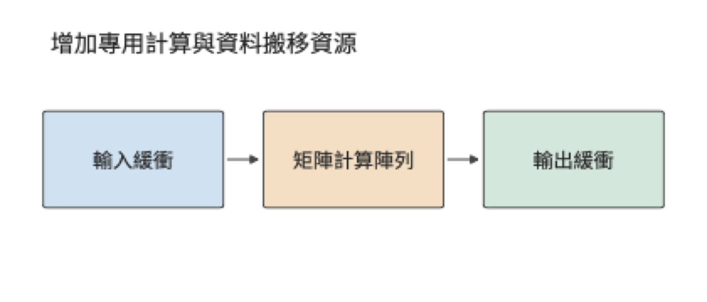
圖 1-15 專用處理器圍繞反覆出現的矩陣運算組織計算陣列和輸入輸出緩衝。緩衝是臨時儲存待計算或已算完資料的儲存區域；三個方框及其箭頭展示資料搬移方向。
第 4 章將介紹 TPU 的矩陣陣列、緩衝和資料通路。每日計算需求 \(QF_1\) 接近資料中心的空閒算力時，專用處理器便可能比通用處理器更合算。
1.4.2 SmartNIC¶
微軟 Azure 在 2015 年設計新一代 40 Gbit/s 雲伺服器時，面臨另一類增長：網路頻寬提高，虛擬網路策略也日趨複雜。SmartNIC（智慧網路卡）是能夠在網路卡上執行部分資料處理的裝置。微軟從 2015 年末起在新部署的 Azure 伺服器中安裝基於 FPGA 的 SmartNIC，2016 年向客戶提供 Accelerated Networking（加速網路）服務。FPGA 的硬體邏輯可以重新設定，網路處理因此能隨策略更新而改變。14
這項設計要同時滿足兩個要求：既把更多 CPU 核留給租戶的應用，又能快速更新網路隔離、轉發和存取控制規則。雲伺服器上的網路處理佔用的正是這些 CPU 核：CPU 除了執行應用，還要處理收發的封包。虛擬機器是在一臺物理主機上劃分出的獨立計算環境。多個虛擬機器共用物理網路時，平台需要識別資料的歸屬、查詢轉發規則、完成封裝，並維持隔離。
先估算這部分工作佔用多少 CPU。40 Gbit/s 鏈路在最小幀條件下每秒約需處理六千萬個包。若單核每秒處理一千萬至兩千萬個包，持續轉發所需核數約為
其中 \(\lambda_{\mathrm{packet}}\) 為封包到達率，\(\mu_{\mathrm{core}}\) 為單核處理率。鏈路頻寬提高使 \(\lambda_{\mathrm{packet}}\) 隨之增大，\(\mu_{\mathrm{core}}\) 卻沒有同步提高，所需核數便隨兩者之比增加。這些核反覆完成相同的封包處理流程；將相應工作移到網路卡，就可以把 CPU 時間留給應用。9
Azure 的做法是讓主機軟體管理複雜策略，把適合重複執行的封包處理規則交給 FPGA。資料經過網路卡時就完成這些處理，CPU 可以把更多時間用於客戶應用。設計的關鍵是兼顧軟體更新能力與硬體處理速度。
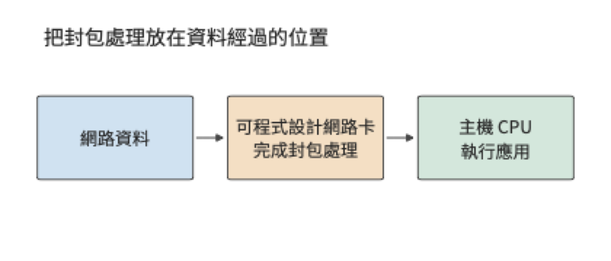
圖 1-16 可程式設計網路卡在資料進入主機前完成指定的封包處理。圖中實線跟蹤資料；網路卡承擔的處理減少主機 CPU 的輔助工作。
將封包處理移到網路卡後，部分操作可以在資料到達時直接完成，CPU 的工作隨之減少。如果網路卡還需要主機記憶體中的資料，就要透過 PCIe 讀取；此時，往返延遲和可同時發出的請求數決定了讀取速度。第 7 章將用 KV-Direct（讓可程式設計網路卡直接處理鍵值儲存請求的系統）分析這種存取。鍵值儲存按唯一的鍵查詢、讀取或更新對應的值。
1.4.3 Unified Bus¶
SmartNIC 改變了單臺伺服器內部的分工。若問題是單個加速器的資源總量不足，就需要進一步考慮加速器之間如何協作。當單個加速器容納不下模型和執行狀態時，最直接的辦法之一是增加加速器。但「總容量變大」與「任務能夠高效執行」之間，還隔著工作劃分、資料交換和同步。
例如，兩張卡的視訊記憶體總量可能足夠儲存權重，但執行計算的加速器必須能夠存取所需的資料。若一步計算依賴另一張卡的結果，就要等待交接；若多張卡共同完成一個操作，還要組織相應的協作。加速器數增加帶來了資源，也增加了連線這些資源的工作。
華為面向昇騰等異構計算裝置推進的 UB（Unified Bus，統一互聯），把問題擴大到多裝置協作。筆者於 2020—2023 年參與這一專案，相關研究在 2019 年已經啟動，早於 OpenAI 於 2020 年釋出自迴歸語言模型 GPT-3；GPT-3 展現出大模型的能力後，業界更廣泛地認識到多裝置協同的需求，專案投入隨之擴大。模型訓練所需的算力增長遠快於單個加速器能力的提升，兩者之比不斷擴大，協同工作的加速器只能越來越多。
這一時期的核心需求是讓規模不斷增長的模型使用多張加速卡，並使計算裝置更方便地存取其他裝置上的記憶體和資料。資料一旦跨過主機邊界，軟體就要改用訊息傳遞介面、重新安排緩衝區，再經過網路卡驅動和協議棧，每多一層抽象就多一段時間。UB 讓裝置直接存取其他裝置的記憶體，把這些抽象層去掉，使一次遠端存取的耗時逼近線路時延決定的下限，上層也能更靈活地組織資源。統一的存取機制使裝置能直接使用更大範圍內的資源，拓撲則決定這些存取的距離與頻寬。模型分工與互聯設計由此緊密相連。第 6.5.5 節從超節點規模的角度討論 UB 的組織方式，第 7.3 節和第 7.4 節沿著一次遠端存取的路徑推導它的延遲、請求速率和連線狀態，並算出去掉的各層抽象原來各佔多少時間。
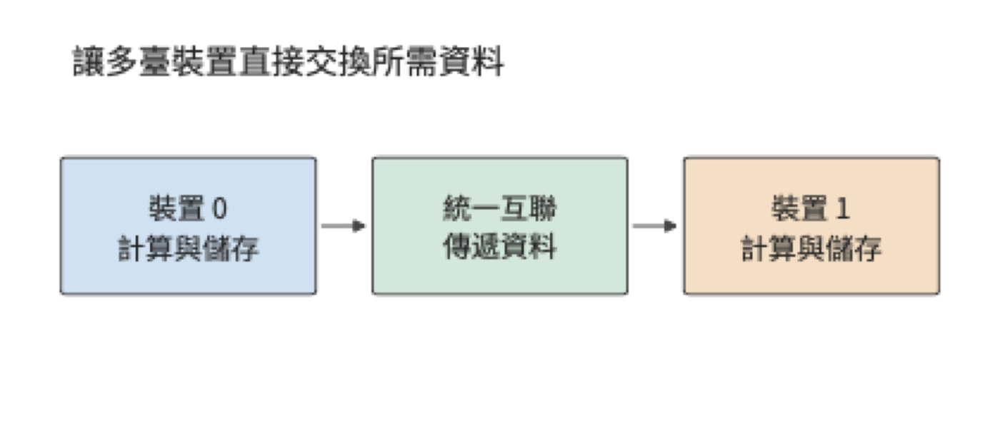
圖 1-17 統一互聯連線不同裝置的計算與儲存資源。模型分工確定要交換什麼，互聯負責把資料送到後續使用它的裝置。
以本章的兩卡模型部署為例：權重均分可以滿足逐卡容量約束，但每個階段還要等待輸入資料和前序結果。增加加速器改變了 \(M_{\mathrm{cap}}\) 和可用算力，也引入新的通訊量與依賴。因此，第一步先檢查每個加速器能否容納所需資料，第二步計算各加速器的運算量與讀寫量，第三步根據執行依賴計算總時間。模型再大、加速器再多，這一分析順序仍然成立。
1.4.4 變化的逐級傳遞¶
三個案例中的設計一經部署，又會帶來新的約束。FPGA 部署到 Azure 伺服器以後，雲平台需要負責 FPGA 邏輯的更新和故障處理14；UB 把大量加速器連成一體以後，每次同步要等待的裝置增多，可能出錯的部件也增多。在 AI 系統中，這種逐級傳遞仍在繼續，下表按本書章節順序列出主要環節。
| 變化 | 不再成立的假設 | 章節 |
|---|---|---|
| 神經網路的執行時間集中在矩陣運算 | 通用處理器能以合理的面積與功耗完成主要計算 | 第 4、5 章 |
| 模型權重超過單卡視訊記憶體 | 一個模型可以放在一張卡上 | 第 6 章 |
| 訓練與推理跨越多臺伺服器同步執行 | 網路流量來自相互獨立的資料流，可以統計複用 | 第 7 章 |
| decode 每讀一遍權重只完成少量計算 | 峰值算力決定執行速度 | 第 8 章 |
| 上下文變長，KV 的規模接近甚至超過權重 | 上下文狀態較小，可以隨時重算 | 第 9 章 |
| 訓練規模達到上千張卡 | 故障是偶發事件 | 第 10 章 |
| Agent 與 RL 負載成批建立工具環境 | 容器中的程式相互獨立，各自決定執行節奏 | 第 11 章 |
| 端側裝置能夠執行模型 | 計算集中到雲端總能縮短完成時間 | 第 12 章 |
與通用作業系統和雲平台相比，AI 系統有一個有利條件：負載種類少，而且事先已知。通用平台要執行事先未知的程式，只能依靠統一的抽象、嚴格的隔離和統計複用；AI 系統圍繞少數模型和確定的執行過程設計，可以提前掌握第 1.1.1 節所說的計算與資料依賴，並據此打破原有的抽象邊界。例如，第 11 章的 RL 沙箱平台根據訓練框架提供的搶佔資訊，主動暫停相應的沙箱。
AI 系統中的許多單項技術並非新發明：第 8 章的 KV 分頁管理借用作業系統的分頁，第 11 章的沙箱放置採用 2001 年提出的 power-of-k-choices 隨機選擇演算法，虛擬機器記憶體回收沿用 2002 年提出的 balloon 機制。15比例改變以後，原先不划算或用不上的方法又變得合算；一項技術是否適用，仍需按當前的比例重新計算。
從語音推理到雲網路，再到大模型的多裝置執行，需求與硬體的變化決定了首先要解決哪個瓶頸，也重新劃分了硬體、軟體與互聯之間的工作。對照開篇的六層圖，這些設計都重新組織了計算與資料搬移。三條線索貫穿後續各章：比例的變化解釋為什麼需要新的設計，資料搬移說明新設計改變了什麼，第 1.3.4 節的物理極限衡量設計達到了什麼程度。本書的主線由此展開：資料搬移塑造了 AI Infra 的架構。
謬誤與陷阱¶
誤區：峰值算力翻倍，執行速度就會翻倍。 先檢查當前執行是否受計算能力限制。例題 1-1 中，權重讀取的時間下界遠大於矩陣計算的時間下界，提高矩陣峰值算力幾乎不改變執行時間的下界；若最佳化的是完整任務的一部分，還要用 Amdahl 定律檢查收益的上限。
誤區：視訊記憶體能容納權重，就能支援目標併發數。 權重只是常駐資料的一部分。上下文狀態、工作區和執行時預留的空間共同佔用視訊記憶體，多加速器還必須逐卡核算。
誤區：比舊實作快了三成，最佳化就算成功。 不知道硬體允許的極限，就無法判斷這三成是逼近了上限，還是離上限仍有一個數量級。應當先算出極限，再按第 1.3.4 節的順序查明差距來自模型漏項還是系統開銷。
誤區：在上一代場景中成熟的系統，可以直接用於新的負載。 每種系統設計都以設計時的比例為前提。通用容器平台假定請求來自相互獨立的租戶，程式自行決定執行節奏；RL 訓練中的沙箱卻成批建立，節奏由 GPU 一側決定，照搬原有設計會讓昂貴的加速器空等（第 11 章）。沿用一種設計之前，應先檢查它所依賴的比例是否仍然成立。
誤區：吞吐率提高，每個使用者的等待時間就會縮短。 批內複用減少每個輸出分攤的讀取開銷，但每個請求仍須經歷排隊和整批執行。吞吐與回應時間應同時報告。
本章數字速查¶
本表用第 1.3.3 節實測採用的 Qwen3-8B 彙總模型側的關鍵數字。prefill 一次處理已有輸入，並得到首個輸出；decode 每次把一個新 token 送入模型，利用已經儲存的 KV 繼續生成。本表固定 BF16 權重、活化值和 KV，併發為 1；prefill 的輸入為 2048 個 token，decode 則在已有 2048 個 token 的上下文後執行一步。17
| 模型需求 | 數值 | 如何使用 |
|---|---|---|
| 完整 BF16 權重 | 16.38 GB | 判斷模型載入所需的視訊記憶體 |
| 每個上下文 token 的全模型 KV | 144 KiB | 上下文長度乘以此數，得到單請求 KV 容量 |
| 2048 個 token 的上下文的 KV | 288 MiB | 約 0.302 GB，隨獨立請求數增加 |
| 2048 個 token 的 prefill 的矩陣運算 | 29.69 TFLOPs | 除以相應矩陣算力，得到計算時間下界 |
| 一步 decode 的矩陣運算 | 16.34 GFLOPs | 輸入為一個 token，另存取已有上下文 |
| 一步 decode 的主要權重讀取 | 15.14 GB | 權重讀一次；嵌入層（把 token 編號對映為向量的查詢表）只讀取當前 token 對應的一行 |
| 一步 decode 的舊 KV 讀取 | 0.302 GB | 每份上下文 KV 讀一次時的位元組數 |
用計算量與讀取量估算執行時間下界。 這裡採用圖 1-13、1-14 實測所用的 RTX PRO 6000 Blackwell Workstation Edition，先單獨計算矩陣運算和資料讀取：按 503.8 TFLOP/s 矩陣峰值換算，prefill 的矩陣運算約需 58.9 ms，decode 約需 0.0324 ms；按 1.792 TB/s 視訊記憶體頻寬，一步 decode 的主要權重與舊 KV 讀取約需 8.62 ms。實測 batch 為 1 時的輸出間隔約 26.5 ms，約為該讀取下界的三倍，差距的來源見第 1.3.4 節。這裡分別估算計算與讀取所需的最短時間，完整執行還要沿運算子順序加入其他運算、實際訪存和啟動時間。第 2—5 章將逐項建立這些計算。
這組數字解釋了兩階段的差別：prefill 在一次呼叫中處理大量輸入，矩陣工作量較大；單請求 decode 每次只處理一個 token，卻仍要讀取大量權重和上下文。提高計算吞吐、提高頻寬和增加批內複用，分別作用於不同的時間項。
本章小結¶
應用用模型與上下文表達行為，許多工因此共享相近的底層計算。掌握模型中的計算依賴和狀態駐留時間，就能統籌考慮原來分屬不同層次的設計選擇：改變資料表示、合併執行步驟、複用準備工作，或縮短加速器間資料傳遞和同步的時間。後續各章將量化這些改動的收益，說明哪些設計取捨因此改變，再根據新的約束選擇模型與系統方案。
分析系統時，先檢查資料能否放下，再用運算量和讀寫量估算耗時，最後根據執行順序分析重疊與等待。按峰值算出的下界就是硬體的物理極限，下界與實測之比就是利用率；兩者的差距不是模型漏了項，就是系統有可以去掉的開銷。在 70B 算例中，權重讀取比矩陣計算慢約 148 倍，因此增加頻寬、減少讀取和提高複用更有助於縮短時間。批內共享可以提高吞吐，而每個請求的回應時間還要包括整批執行和排隊。
本章核心練習為 1-2、1-3、1-4，分別練習單位換算與可行性判斷、條件改變後的資源估算，以及預測與實測結果的比較。下一章將根據真實模型設定，細化 \(2N\) 計算量與權重讀取量的估算，為這些計算提供具體的矩陣尺寸與狀態大小。
-
「十八層寶塔」由華為半導體首席科學家廖恆博士在 2026 年 7 月的一次公開長訪談中提出，用來描述從應用到製造工藝的層層依賴。 ↩
-
Jeff Dean，LADIS 2009 演講，本地 PDF，「Numbers Everyone Should Know」及紙筆估算部分。尋道算例設連續執行 20 次隨機讀取。 ↩
-
NVIDIA，H100 架構白皮書與規格頁面快照。本章採用 SXM 形態與 BF16 稠密矩陣運算規格；原始輸入版本和校驗值見配圖來源清單。 ↩
-
70B 近似預算復算及配套場景；單位與逐卡容量復算。1.3 的時間估算圖讀取這組固定的 70B 近似結果；1.2.3 的容量圖使用真實權重索引與分組量化結果。 ↩
-
Williams、Waterman、Patterson，Roofline 論文。 ↩
-
補測記錄與加速器事件計時。補測同時關閉了字首快取並重新構造了輸入，逐步日誌的影響無法與這些條件完全分開；加速器事件只覆蓋模型執行，不含取樣與輸出。 ↩
-
練習 1-4 記錄說明、結構化分析結果及後續補測。正文和圖 1-13、圖 1-14 採用最初記錄的短輸入組。 ↩
-
Jouppi 等，TPU v1 論文，第 2 節關於起源、架構與實作的說明。三分鐘語音搜尋是論文記載的歷史需求預測。 ↩
-
筆者博士論文，第 4.2.1 節簡單轉發基線；核數預算復算。約六千萬包每秒來自 40 Gbit/s 與每幀佔用 84 位元組線時的計算，3 至 6 核對應簡單轉發基線。 ↩
-
相關研究見抽象邊界調研；基礎模型承接多種下游任務的討論見 Stanford CRFM。 ↩
-
請求圖是通用職責示意；排程與狀態管理的職責劃分可參照 v0.26.0 的 vLLM Scheduler 文件；1.3.3 節的實測使用 vLLM 0.23.0。路由策略、tokenizer 位置以及 prefill／decode 是否分離屬於部署選擇。 ↩
-
具體產品例子見 NVIDIA GB200 NVL72、硬體指南與網路指南。圖 1-5 使用一般化連線。 ↩
-
參數與 BF16 位元組數來自 DeepSeek-R1-Distill-Llama-70B 公開權重索引及固定版本設定。分組量化的權重總量採用逐項計算記錄中的全模型彙總，每組 128 個參數、scale 佔 2 位元組。RTX 4090 的 24 GB 名義規格見官方頁面存檔。本節用規格標稱 GB 作統一容量預算。 ↩
-
Firestone 等，微軟，Azure Accelerated Networking: SmartNICs in the Public Cloud，NSDI 2018；原論文文字。摘要給出 2015 年末部署、2016 年向客戶提供服務的時間，第 3 節說明減少 CPU 佔用、保持可程式設計性與支援更高頻寬的設計目標。 ↩↩
-
power-of-k-choices 見 M. Mitzenmacher, The Power of Two Choices in Randomized Load Balancing, IEEE TPDS, 2001；balloon 機制見 C. A. Waldspurger, Memory Resource Management in VMware ESX Server, OSDI 2002。兩篇文獻均由 DSec 論文引用，相應機制見第 11.2.2 節與第 11.3.2 節。 ↩
-
數字取自固定 GPU 規格與逐項出處，對應
rtx4090、a100-80gb-sxm、h100-sxm；各精度、累加方式與稠密條件分別核對。GB 與 TB 在本表均為十進位制單位。 ↩ -
速查數字復算原始碼根據固定 Qwen3-8B 設定統計 prefill 與 decode 的矩陣運算，讀取量來自批內權重複用計算。權重佔用包含完整嵌入表，逐步生成時只讀取當前 token 對應的嵌入行；讀寫時間採用每份主要資料存取一次的理想條件。 ↩
-
DeepSeek V4.1 官方技術報告，第 1、2、3 節與第 6 節；跨章會話的固定條件與復算。 ↩